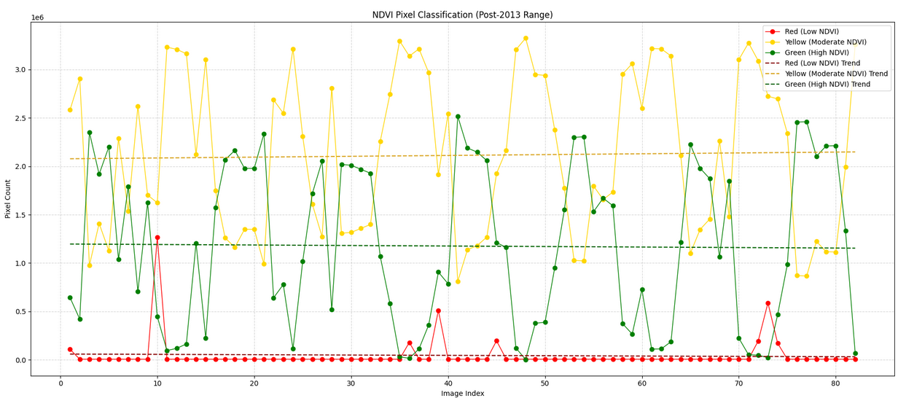
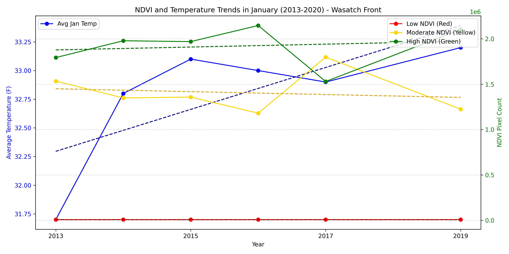

Data · Analysis
NDVI Analysis Over Time
Understanding vegetation changes in the Wasatch Front
Understanding vegetation changes in the Wasatch Front
Over time, the NDVI has shown a general increase, indicating more vegetation. While this is positive in some ways, it also suggests shifts in seasonal patterns. More vegetation during winter months may be a consequence of climate change, with later winter starts and earlier ends.

Higher NDVI values in summer may contribute to hotter temperatures. Additionally, the distinction between pre-Landsat 8 and post-Landsat 8 data requires careful interpretation due to calibration differences.

Due to satellite updates, Landsat 8 captures NDVI data with greater precision but more erratic fluctuations. This means pre-2013 and post-2013 datasets must be treated separately. Despite this, key trends remain consistent: warm spikes grow larger, while cold spikes shrink over time.
Pre-2013 and post-2013 datasets use different Landsat sensors and must be interpreted separately due to calibration differences.


So in conclusion, we are seeing an increase in vegetation during winter and summer months, an increase in temperatures in both months, and correlation between the two. This is likely caused by climate change, and is only growing over time. We can't keep waiting, and we must act now if we are to fix this disaster, or we may lose much of what we love about the Wasatch.